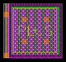
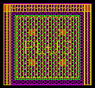

c3t_mimw6 bottom contacts property
these layouts show the effect of varying the bottom contacts property for an example c3t_mimw6 cap
bulk = n (this is the default)
bottom contacts = l

bottom contacts = lrt

bottom contacts = lbrt and bulk = lbrt